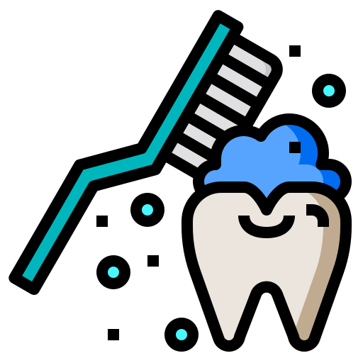
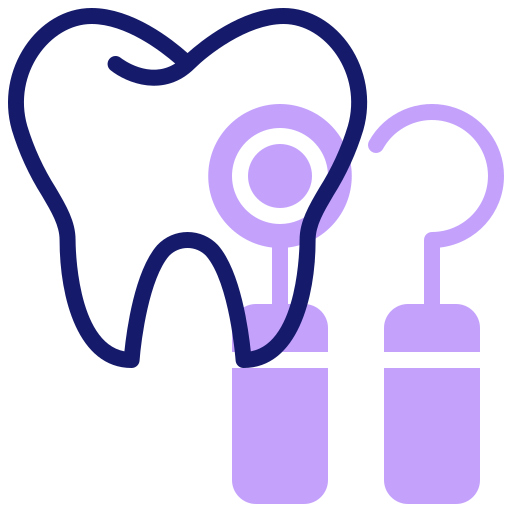

Tratamientos preventivos
1Aplicacion de flúor:
Se trata de minimizar el riesgo de la aparicion de caries.

2Limpieza dental:
Se logra quitar la placadental y el sarro de las superficies de los dientes previniendo enfermedades en las encias.

3Selladores:
Se realiza una limpieza y posteriormente las partes mas susceptibles a las caries son selladas.